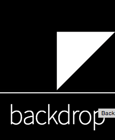
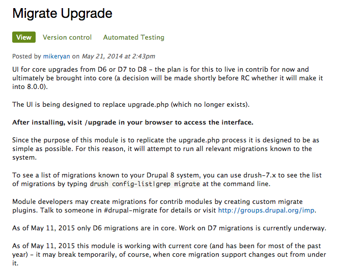

Delaying the Inevitable
Future Proofing your Drupal 7 Site
Presentation by Greg Schnippel / @schnippy
WELCOME
Slides online here:
https://github.com/schnippy/govcon-futureproof
WHY ARE YOU HERE?
This is your first Drupal major release and you want to know what to expect
You are starting development on a new 7.x site and are seeking validation
You want to know what to do to make an upgrade to 8.x less painful
AM I IN THE RIGHT ROOM?
What should I do now to future proof my site?
How much time does my Drupal 7.x site have?
What Drupal 8.x awesomeness can I backport to 7.x now?
Why do you hate Drupal 8.x?
Are you going to talk about Backdrop?
What is the best module on Drupal.org?
What Drupal 8.x awesomeness can I backport to 7.x now?
AM I IN THE RIGHT ROOM?
What should I do now to future proof my site?
How much time does my Drupal 7.x site have?
What Drupal 8.x awesomeness can I backport to 7.x now?
Why do you hate Drupal 8.x?
Are you going to talk about Backdrop?
What is the best module on Drupal.org?
How much time does my Drupal 7.x site have?
May 1st, 2006: Drupal 4.7x released, last major 4.x branch
January 15, 2007: Drupal 5.x released (8 months later)
February 13, 2008: Drupal 6.x released (1 year)
January 5, 2011: Drupal 7.x released (~3 years)
Drupal 8.x is in "API Completion" phase
“Contributed module and theme developers are encouraged to start porting their modules during this phase to uncover critical API issues while they can still be corrected, but should also be aware that APIs will still change as critical issues are addressed. Developers who wish to go through the upgrade process only once should wait for the first release candidate.”
https://www.drupal.org/core/dev-cycle
Technical debt in Drupal 8.x
(August 28, 2013)
AM I IN THE RIGHT ROOM?
What should I do now to future proof my site?
How much time does my Drupal 7.x site have?
What Drupal 8.x awesomeness can I backport to 7.x now?
Why do you hate Drupal 8.x?
Are you going to talk about Backdrop?
What is the best module on Drupal.org?
ENOUGH ALREADY WITH THE CHARTS HOW MUCH TIME DO I HAVE
Drupal 6x/7x Adoption Rates

MAKE THIS MORE COMPLICATED
Time during which contrib developers will continue pushing 7.x module updates
Time before Drupal 9.x when 7.x will enter into maintenance-only releases
Time before that new module your boss wants gets released 8.x only
AM I IN THE RIGHT ROOM?
What should I do now to future proof my site?
How much time does my Drupal 7.x site have?
What Drupal 8.x awesomeness can I backport to 7.x now?
Why do you hate Drupal 8.x?
Are you going to talk about Backdrop?
What is the best module on Drupal.org?
[ C E N S O R E D ]
AM I IN THE RIGHT ROOM?
What should I do now to future proof my site?
How much time does my Drupal 7.x site have?
What Drupal 8.x awesomeness can I backport to 7.x now?
Why do you hate Drupal 8.x?
Are you going to talk about Backdrop?
What is the best module on Drupal.org?
WHY DO YOU HATE DRUPAL 8.x?

AM I IN THE RIGHT ROOM?
What should I do now to future proof my site?
How much time does my Drupal 7.x site have?
What Drupal 8.x awesomeness can I backport to 7.x now?
Why do you hate Drupal 8.x?
Are you going to talk about Backdrop?
What is the best module on Drupal.org?
WHAT SHOULD I DO NOW TO FUTURE PROOF MY SITE?
AUDIT your existing modules, know what you depend on
TRACK modules to watch for conflicts
UPGRADE existing modules
1. AUDITING YOUR SITE MODULES
(Drupal 8: which Drupal 7 modules went into core?)
2. DEFENSIVE TRACKING
USE THIS NOT THAT
Url module not the Link module
Telephone module not the Phone module
RestWS module not the Services module
Entity View Modes module not the Display Suite module
Entity Reference module not the Node Reference or User Reference module
STALL FOR TIME
migrate_upgrade project
3. UPGRADE ALL THE MODULES
WE MADE IT!
What should I do now to future proof my site?
How much time does my Drupal 7.x site have?
What Drupal 8.x awesomeness can I backport to 7.x now?
Why do you hate Drupal 8.x?
Are you going to talk about Backdrop?
What is the best module on Drupal.org?
Thank You!
Questions?
Presentation by Greg Schnippel / @schnippy
https://github.com/schnippy/govcon-futureproof
SPONSOR SHOUTOUTS
- Presentation software: Reveal.js
- Glyph Fonts: FontAwesome.io
- Unicorns: Cornify.com